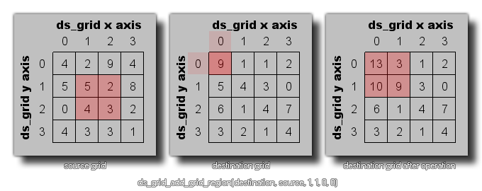

ds_grid_add_grid_region
Adds the contents of the cells in a source grid to the cells in a destination grid.
Syntax :
ds_grid_add_grid_region(index, source, x1, y1, x2, y2, xpos, ypos);
| Argument | Description |
|---|---|
| index | The index of the destination grid. |
| source | The index of the source grid. |
| x1 | The left position of the region of cells to copy from the source grid. |
| y1 | The top position of the region of cells to copy from the source grid. |
| x2 | The right position of the region of cells to copy from the source grid. |
| y2 | The bottom position of the region of cells to copy from the source grid. |
| xpos | The x position on the destination grid to add the source region to. |
| ypos | The y position on the destination grid to add the source region to. |
Returns : N/A
Description
This function can be used to add all the values of all the cells found within the source area of a grid to the values within the destination grid, as illustrated below:

NOTE : You can also use this function on the same grid to add values from one regon of the grid to those stored in another (see code example below).
Example :
ds_grid_add_grid_region(grid, grid, 0, 0, 1, 5, 2, 0);
The above code would copy the region of cells from (0,0) to (1,5) of the ds-grid indexed in the variable "grid" and add them to the cells from position (2,0) of the same ds_grid.
Back : DS Grids
Next : ds_grid_multiply